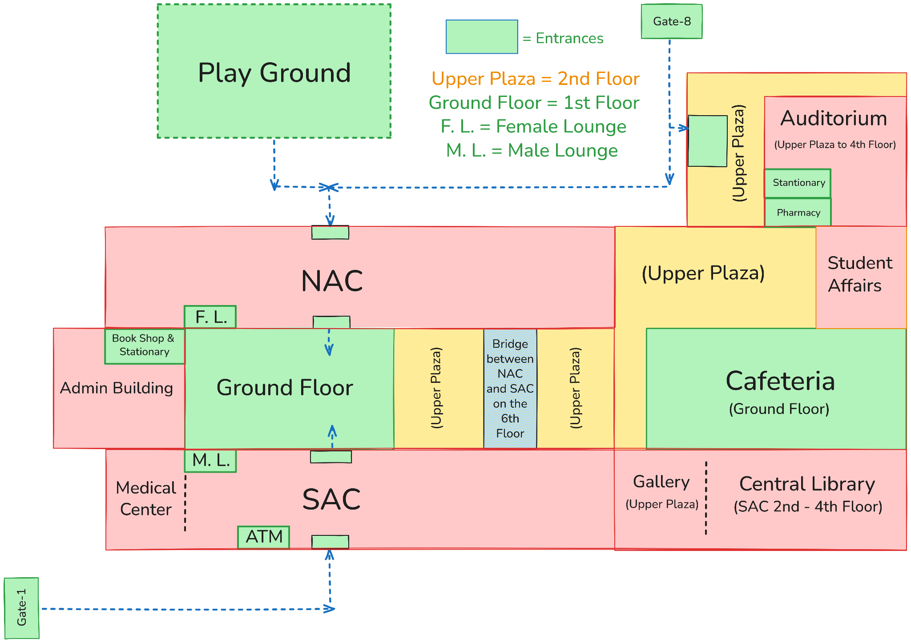
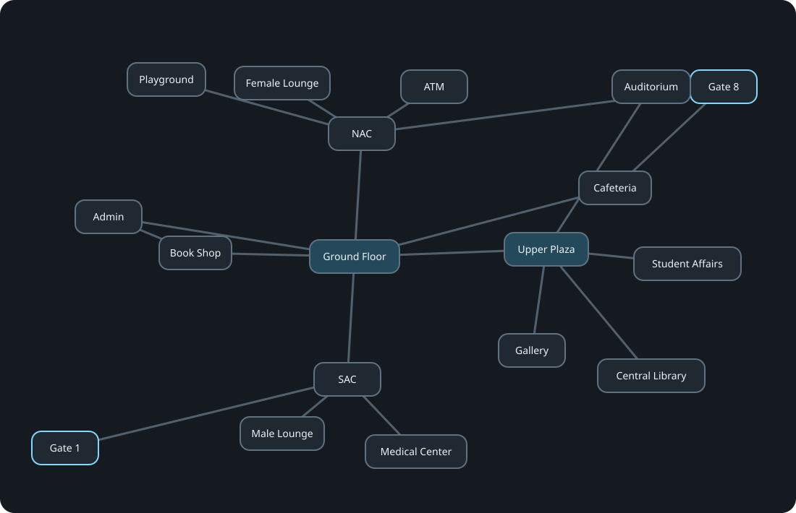

Document version: 1.1
Current code baseline: v1.1-style simple code
Course: CSE225L — Data Structures and Algorithms Lab
Project: Campus Navigation System
Purpose of this file: This is the single working reference for understanding, teaching, dividing, demonstrating, modifying, and defending the project in viva. Future project changes should be reflected here so that this document remains the source of truth.
0. How we use this site#
This is our working handbook. We use it when we sit together, explain the project, practice viva changes, and update anything that changes in the code.
Use it in four ways:
- Before coding: understand the graph, map, data structures, files, and why each choice exists.
- While teaching the team: go member by member using the ownership and viva sections.
- Before viva: practice the alternate implementations and modification prompts.
- Whenever the project changes: update the Source of Truth, Function Inventory, Member Division if necessary, Testing Checklist, and Change Log.
One rule matters more than anything else:
Do not memorize code line-by-line. Understand what data is stored, what each ADT operation does, why an algorithm needs that ADT, and what changes when the implementation is replaced.
1. What the assignment actually asks for#
The selected assignment is Project 6: Campus Navigation System.
The required core features are:
- Graph representation using adjacency lists
- BFS traversal
- DFS traversal
- Shortest path in an unweighted graph
- Dynamic addition and removal of roads
The course project guidance also evaluates implementation, correctness, understanding, code quality, demonstration, and individual viva. The project guidance warns against relying on STL containers to implement the required data structures. This is why the project uses the ADTs from the course labs rather than vector, STL list, STL queue, STL stack, map, etc.
What this means for our design#
The project is not supposed to be a Google Maps clone. It is a Data Structures and Algorithms project where a campus map becomes a graph.
Therefore:
- A location becomes a graph vertex.
- A direct walkable connection becomes a graph edge.
- We use an unweighted graph, so every direct edge has equal cost: 1.
- The shortest path means the minimum number of modeled graph connections, not minimum meters or walking time.
- We dynamically add/remove edges to represent opening or closing routes.
2. The project idea in one minute#
The entire project can be explained with this paragraph:
The NSU campus is modeled as an undirected, unweighted graph. Important campus places such as Gate 1, Gate 8, NAC, SAC, Ground Floor, Upper Plaza, Central Library, Cafeteria, Playground, and lounges are vertices. Direct walkable connections are edges. Each vertex stores its neighboring vertices in an adjacency list implemented using the linked-list
UnsortedTypeADT from the course. BFS uses a Queue ADT, DFS uses a Stack ADT, and the shortest path uses BFS because the graph is unweighted. Roads can also be added or removed dynamically by inserting into or deleting from the adjacency lists.
If a member can explain that correctly, they already understand the skeleton of the project.
3. The map is the backbone of the graph#
The physical map was designed first, then simplified into a graph suitable for the project.

Our original campus sketch. Use it to understand why the graph was built this way. The current edge list below is the final source of truth. One correction to remember: the City Bank ATM is modeled as a NAC connection in the final graph.
This matters because algorithms cannot operate until somebody has decided:
- what counts as a vertex,
- what does not need to be a vertex,
- which places are directly connected,
- which spaces act as navigation hubs,
- whether connections are one-way or two-way,
- whether routes are weighted or unweighted.
3.1 Map interpretation#
The custom campus map distinguishes important physical areas including:
- Gate 1
- Gate 8
- Administrative Building
- NAC
- SAC
- Ground Floor
- Upper Plaza, treated as the connected 2nd-floor common area
- Female Lounge
- Male Lounge
- Book Shop & Stationery
- Medical Center
- City Bank ATM
- Cafeteria
- Student Affairs
- Auditorium
- Central Library
- Playground
- Gallery
Important modeling decisions#
Gate 8: Gate 8 opens onto the ground-floor side below/near the Auditorium area. It can lead toward Cafeteria and also toward a NAC entrance. For the simplified graph, Gate 8 therefore has direct modeled connections to NAC and Cafeteria.
Upper Plaza: The yellow Upper Plaza area is treated as one connected second-floor navigation hub. Auditorium, Student Affairs, Gallery, and Central Library are represented as directly connected to it.
Ground Floor: Ground Floor is a central first-floor hub and connects several major campus components.
ATM: City Bank ATM is modeled as directly connected to NAC, because it is on/near the NAC ground-floor entrance area.
Entrances: Entrance rectangles on the drawn map are not separate graph vertices. They explain physical connectivity but would add unnecessary graph nodes.
Stationary/Pharmacy near Gate 8: These are not separate vertices in the current graph. The Gate 8 to Cafeteria edge abstracts that route for project simplicity.
NAC-SAC bridge: The physical bridge is not currently modeled as its own vertex or as a separate direct NAC-SAC edge. The project does not need to encode every possible corridor. It models a simplified set of meaningful routes.
Ground Floor to Upper Plaza: This edge represents vertical movement through normal campus circulation such as stairs/lifts. It is necessary to connect the first-floor and second-floor portions of the graph.
4. Current source-of-truth vertex list#
These IDs are currently hard-coded by insertion order in main.cpp. Do not casually reorder them because the initial edge list uses the numeric IDs.
| ID | Location |
|---|---|
| 0 | Gate 1 |
| 1 | Gate 8 |
| 2 | Administrative Building |
| 3 | NAC |
| 4 | SAC |
| 5 | Ground Floor |
| 6 | Upper Plaza |
| 7 | Female Lounge |
| 8 | Male Lounge |
| 9 | Book Shop & Stationery |
| 10 | Medical Center |
| 11 | City Bank ATM |
| 12 | Cafeteria |
| 13 | Student Affairs |
| 14 | Auditorium |
| 15 | Central Library |
| 16 | Playground |
| 17 | Gallery |
Current number of vertices: 18
5. Current source-of-truth edge list#
All current campus roads are treated as undirected. A <-> B means both A can reach B and B can reach A.
| # | Edge | Meaning |
|---|---|---|
| 1 | Gate 1 <-> SAC | Gate 1 enters the SAC side |
| 2 | Gate 8 <-> NAC | Gate 8 can lead toward NAC |
| 3 | Gate 8 <-> Cafeteria | Gate 8 ground-floor route toward Cafeteria |
| 4 | Administrative Building <-> Ground Floor | Admin connects to common ground-floor circulation |
| 5 | Administrative Building <-> Book Shop & Stationery | Direct access between Admin and Book Shop |
| 6 | NAC <-> Ground Floor | NAC connects to common ground floor |
| 7 | Ground Floor <-> Female Lounge | Female Lounge connects directly to Ground Floor |
| 8 | NAC <-> City Bank ATM | ATM is near the NAC entrance |
| 9 | NAC <-> Playground | NAC-side access to Playground |
| 10 | SAC <-> Ground Floor | SAC connects to common ground floor |
| 11 | Ground Floor <-> Male Lounge | Male Lounge connects directly to Ground Floor |
| 12 | SAC <-> Medical Center | Medical Center is reached through SAC |
| 13 | Ground Floor <-> Upper Plaza | Vertical circulation between floors |
| 14 | Ground Floor <-> Book Shop & Stationery | Common route to Book Shop area |
| 15 | Ground Floor <-> Cafeteria | Cafeteria sits in the central ground-floor network |
| 16 | NAC <-> Cafeteria | Cafeteria directly connects to the NAC side |
| 17 | SAC <-> Cafeteria | Cafeteria directly connects to the SAC side |
| 18 | Upper Plaza <-> Student Affairs | Second-floor hub connection |
| 19 | Upper Plaza <-> Auditorium | Auditorium accessed from Upper Plaza |
| 20 | Upper Plaza <-> Central Library | Library connects to Upper Plaza |
| 21 | Upper Plaza <-> Gallery | Gallery connects to Upper Plaza |
| 22 | Central Library <-> Gallery | Library and Gallery have a direct connection |
| 23 | SAC <-> Central Library | Central Library also has direct SAC access |
Current number of undirected edges: 23
6. Current adjacency list#
Because UnsortedType::Insert() inserts at the head of the linked list, the printed order reflects reverse insertion order for each vertex. This is expected and does not change the graph.
Current program output:
Gate 1 -> SAC
Gate 8 -> Cafeteria, NAC
Administrative Building -> Book Shop & Stationery, Ground Floor
NAC -> Cafeteria, Playground, City Bank ATM, Ground Floor, Gate 8
SAC -> Central Library, Cafeteria, Medical Center, Ground Floor, Gate 1
Ground Floor -> Cafeteria, Book Shop & Stationery, Upper Plaza, Male Lounge, SAC, Female Lounge, NAC, Administrative Building
Upper Plaza -> Gallery, Central Library, Auditorium, Student Affairs, Ground Floor
Female Lounge -> Ground Floor
Male Lounge -> Ground Floor
Book Shop & Stationery -> Ground Floor, Administrative Building
Medical Center -> SAC
City Bank ATM -> NAC
Cafeteria -> SAC, NAC, Ground Floor, Gate 8
Student Affairs -> Upper Plaza
Auditorium -> Upper Plaza
Central Library -> SAC, Gallery, Upper Plaza
Playground -> NAC
Gallery -> Central Library, Upper Plaza
Degrees worth remembering#
- Gate 1: 1
- Gate 8: 2
- Administrative Building: 2
- NAC: 5
- SAC: 5
- Ground Floor: 8, the maximum current degree
- Upper Plaza: 5
- Cafeteria: 4
- Central Library: 3
- Book Shop & Stationery and Gallery: 2 each
- Female Lounge, Male Lounge, Medical Center, ATM, Student Affairs, Auditorium, and Playground: 1 each
The maximum degree being 8 matters in viva if somebody replaces the linked adjacency lists with the Lab 5 fixed-size array-based UnsortedType, whose manual uses SIZE = 5. That capacity is too small for Ground Floor. The alternate array implementation must use capacity at least 8, preferably MAX_LOCATIONS or another safe value such as 25.
7. Graph visualization#
This diagram is the connectivity model used by the program. It is not trying to redraw the physical campus. Read it as: which modeled place connects directly to which other modeled place?

Exact topology used by the project. The numbers are the same IDs used in main.cpp. Every line is one of the 23 undirected edges in the source-of-truth edge list. Click the diagram to open it full size.
How to read this graph#
8. Why the graph is undirected and unweighted#
Undirected#
A modeled campus path can normally be walked in both directions. Therefore adding A-B performs two insertions:
adjacencyList[location1].Insert(location2);
adjacencyList[location2].Insert(location1);
If the graph were directed, only one insertion would be used.
Unweighted#
The assignment asks for shortest path in an unweighted graph. Therefore every direct connection has conceptual cost 1.
Example:
Gate 1 -> SAC -> Cafeteria -> NAC -> Playground
has 4 edges, so the shortest-path length is 4.
This is not claiming four meters, four minutes, or four floors. It means four modeled graph steps.
Because all edges are equal, BFS is the correct shortest-path method. A priority queue/Dijkstra-style approach is unnecessary.
9. Current project architecture#
CampusNavigationSystem/
|
|-- main.cpp
|-- campusgraph.h
|-- campusgraph.cpp
|
|-- unsortedtype.h
|-- unsortedtype.cpp
|
|-- stacktype.h
|-- stacktype.cpp
|
|-- queuetype.h
|-- queuetype.cpp
|
`-- CampusNavigationSystem.cbp
9.1 What is actually project-specific code?#
The ADT files are based directly on structures supplied/taught in the lab manuals. The project-specific logic is primarily:
main.cppcampusgraph.hcampusgraph.cpp
Current K&R-style line counts:
| Project-specific file | Raw lines | Nonblank lines |
|---|---|---|
main.cpp |
137 | 129 |
campusgraph.h |
61 | 51 |
campusgraph.cpp |
298 | 235 |
| Project-specific total | 496 | 415 |
The whole source set, including reused lab ADTs, is currently 831 raw lines.
So mentally, this is not a mysterious 831-line source set. It is roughly 415 nonblank lines of actual campus-project logic sitting on top of taught ADTs.
10. Coding style rule#
Current formatting style is K&R-style braces:
void Function() {
// code
}
not:
void Function()
{
// code
}
Use the same style for future changes so the project stays visually consistent.
Other style goals:
- straightforward
if,else,for,while - ordinary arrays and pointers from the labs
- no STL containers for required structures
- no advanced modern-C++ tricks
- no unnecessary abstractions
- comments only where they genuinely help
- code should look like a CSE225L student project, not a framework
11. Lab grounding: which lab files matter and why#
The project should be defendable as a combination of topics taught in the course.
Lab 4 — Template Class & Operator Overloading#
What it teaches: templates, dynamic arrays, user-defined types, operator overloading.
Project relevance: indirect. Our taught ADTs are templates such as UnsortedType<T>, StackType<T>, and QueueType<T>. We do not need operator overloading for the campus graph.
Use in submitted project: no direct feature.
Lab 5 — Unsorted List, Array-Based#
What it teaches: array-based UnsortedType, Insert, Search, Delete, GetNext, Reset, Length, fixed capacity.
Project relevance: important viva alternative.
Our current adjacency lists are linked-list based, but the instructor may ask:
Show the adjacency list using an array-based list instead.
The same high-level ADT operations can be used, but the underlying storage becomes an array.
Important caveat: the manual's sample SIZE = 5 is too small for our Ground Floor vertex, which currently has degree 8. Increase the array capacity for the alternate version.
Lab 6 — Sorted List, Array-Based#
What it teaches: sorted insertion, binary search, deletion from a sorted array.
Project relevance: low-to-medium as a viva discussion point.
We deliberately do not use a sorted adjacency list because graph traversal does not require neighbors to be sorted. Sorting neighbors adds complexity without helping the required algorithms.
Potential viva variation:
What changes if neighbors must always be displayed in ascending ID order?
Then a SortedType<int> could replace UnsortedType<int>, but it is not necessary for the actual project.
Lab 7 — Unsorted List, Linked-List Based#
What it teaches: linked-list UnsortedType, Node, head, insertion, searching, deletion, traversal/reset, dynamic memory.
Project relevance: direct and fundamental.
Current graph declaration:
UnsortedType<int> adjacencyList[MAX_LOCATIONS];
Each graph vertex owns one linked-list adjacency list.
Operations used:
Insert()-> add neighbor / add roadSearch()-> prevent duplicates / check roadDelete()-> remove neighbor / remove roadLength()-> count neighborsReset()+GetNext()-> traverse neighbors
This lab provides the literal storage backbone of the graph.
Lab 8 — Sorted List, Linked-List Based#
What it teaches: linked-list storage with sorted insertion.
Project relevance: alternative only.
We use unsorted linked lists because sorting is unnecessary. Could be used in a viva if asked to keep adjacency IDs sorted automatically.
Lab 9 — Stack, Array-Based#
What it teaches: array stack, top, Push, Pop, Top, IsEmpty, IsFull.
Project relevance: important viva alternative.
Current project uses the linked-list Stack from Lab 11. If asked to implement DFS using an array-based stack, the DFS logic is almost unchanged because both implementations provide the same ADT operations.
Important caveat: the Lab 9 manual uses a small fixed SIZE = 5. That is not safe for an 18-vertex graph. Use a capacity of at least 18, preferably MAX_LOCATIONS/25, for a project-sized alternate implementation.
Lab 10 — Queue, Array-Based#
What it teaches: circular array queue with front, rear, modulo arithmetic, Enqueue, Dequeue, IsEmpty, IsFull.
Project relevance: important viva alternative.
Current BFS uses the linked-list Queue from Lab 12. If asked for an array version, Lab 10 is the natural replacement.
Its parameterized constructor allows a safer project-sized queue:
QueueType<int> queue(MAX_LOCATIONS);
Lab 11 — Stack, Linked-List Based#
What it teaches: linked-list stack with a head pointer and Push, Pop, Top, IsEmpty, IsFull.
Project relevance: direct.
Used in:
- DFS traversal
- reversing the shortest-path parent chain so the path prints source-to-destination
Current conceptual behavior:
Push -> insert at head
Top -> read head
Pop -> delete head
LIFO behavior is what makes the explicit-stack traversal depth-first.
Lab 12 — Queue, Linked-List Based#
What it teaches: linked-list queue with front, rear, Enqueue, Dequeue, IsEmpty, MakeEmpty.
Project relevance: direct.
Used in:
- BFS
- retrieving adjacency vertices into a temporary queue
- shortest-path BFS
- DFS's neighbor collection before pushing to Stack
FIFO behavior is what makes BFS expand level by level.
Lab 13 — Recursion#
What it teaches: recursive functions and base/recursive cases.
Project relevance: not required in current submitted code, but very useful for viva alternatives.
Two strong alternate implementations:
- Recursive DFS instead of explicit
StackType. - Recursive shortest-path printing instead of using a stack to reverse
parent[].
We do not add recursion simply for decoration. The Graph lab explicitly teaches stack-based DFS, so the submitted version follows that.
Priority Queue Lab#
What it teaches: heap-based priority queue, ReheapUp, ReheapDown, priority-based enqueue/dequeue.
Project relevance: deliberately not used.
Why: our graph is unweighted. BFS already finds shortest paths in an unweighted graph. A priority queue would be unnecessary complexity.
A good viva answer:
If edges had different weights, we would need a weighted shortest-path approach and a priority structure might become useful. For our required unweighted graph, Queue-based BFS is sufficient.
Binary Search Tree Lab#
What it teaches: BST insertion, search, deletion, inorder/preorder/postorder traversal, recursive tree functions, queues for traversal output.
Project relevance: deliberately not used.
Why: a campus network is not naturally a hierarchy or ordered search tree. A BST is the wrong structure for general road connectivity because a vertex can have arbitrary graph relationships.
The BST lab is still useful evidence that recursion, nodes, dynamic memory, and Queue ADTs are all part of the course vocabulary.
Graph Lab#
What it teaches: Graph ADT, vertex storage, marks, DFS using Stack, BFS using Queue, outdegree, edge existence, shortest path length using BFS.
Project relevance: most important algorithmic lab.
One key difference:
- Graph lab implementation: adjacency matrix
- Project requirement: adjacency list
So our project deliberately takes the Graph lab's traversal logic but replaces matrix-based neighbor retrieval with a Lab 7 linked-list adjacency list.
This is one of the strongest design explanations in the entire project:
We combined the Graph lab's algorithms with the Linked-List Unsorted List lab because the project specifically requires adjacency lists.
12. ADT-to-project connection map#
COURSE ADTs / ALGORITHMS
Lab 7 Unsorted Linked List
|
+--> adjacencyList[vertex]
| |
| +--> Insert --> AddRoad
| +--> Search --> duplicate/edge check
| +--> Delete --> RemoveRoad
| +--> GetNext --> enumerate neighbors
|
+-----------------------------+
|
Lab 12 Linked Queue |
| |
+--> BFS ---------------------+--> CampusGraph
+--> ShortestPath BFS |
+--> temporary neighbors |
|
Lab 11 Linked Stack |
| |
+--> DFS ---------------------+
+--> reverse shortest path
|
Graph Lab |
+--> marks[] -----------------+
+--> BFS/DFS structure -------+
+--> shortest distance -------+
13. Current class architecture#
classDiagram
class CampusGraph {
-string locations[MAX_LOCATIONS]
-UnsortedType~int~ adjacencyList[MAX_LOCATIONS]
-bool marks[MAX_LOCATIONS]
-int numLocations
-bool ValidLocation(int id)
-void GetToVertices(int vertex, QueueType~int~ &adjVertices)
-void ClearMarks()
-void MarkVertex(int vertex)
-bool IsMarked(int vertex)
+CampusGraph()
+void AddLocation(string name)
+void AddRoad(int a, int b)
+void RemoveRoad(int a, int b)
+void DisplayLocations()
+void DisplayGraph()
+void BFS(int start)
+void DFS(int start)
+void ShortestPath(int start, int end)
+void SearchByID(int id)
+void SearchByName(string name)
}
class UnsortedType~T~ {
-Node* head
-Node* pointTo
-int size
+Insert(T)
+Search(T, bool&)
+Delete(T)
+Length()
+GetNext(T&)
+Reset()
}
class StackType~T~ {
-Node* head
+Push(T)
+Pop()
+Top() T
+IsEmpty() bool
}
class QueueType~T~ {
-Node* front
-Node* rear
+Enqueue(T)
+Dequeue(T&)
+IsEmpty() bool
}
CampusGraph --> UnsortedType : adjacency lists
CampusGraph --> StackType : DFS/path reversal
CampusGraph --> QueueType : BFS/neighbor processing
14. Current file-by-file responsibilities#
main.cpp#
Responsibilities:
- create the
CampusGraphobject - add all 18 locations in the fixed ID order
- add all 19 initial roads
- display menu
- collect user input
- call the appropriate
CampusGraphfunction
It should not contain the internals of BFS, DFS, linked-list deletion, etc.
campusgraph.h#
Defines the project-specific Graph class.
Private data:
string locations[MAX_LOCATIONS];
UnsortedType<int> adjacencyList[MAX_LOCATIONS];
bool marks[MAX_LOCATIONS];
int numLocations;
Private helper functions:
bool ValidLocation(int id);
void GetToVertices(int vertex, QueueType<int> &adjVertices);
void ClearMarks();
void MarkVertex(int vertex);
bool IsMarked(int vertex);
Public project features:
void AddLocation(string name);
void AddRoad(int location1, int location2);
void RemoveRoad(int location1, int location2);
void DisplayLocations();
void DisplayGraph();
void BFS(int startVertex);
void DFS(int startVertex);
void ShortestPath(int startVertex, int endVertex);
void SearchByID(int id);
void SearchByName(string name);
campusgraph.cpp#
This is the main project logic file.
Contains:
- constructor
- validation
- graph mutation
- displays/searches
- adjacency retrieval
- visited/mark logic
- BFS
- DFS
- shortest path
unsortedtype.*#
Course ADT implementation used as the adjacency-list container.
Important ideas to understand, but it is not the main custom project code.
stacktype.*#
Course ADT implementation used for DFS and path reversal.
queuetype.*#
Course ADT implementation used for BFS, shortest path, and neighbor handling.
15. Feature-by-feature explanation#
Feature 1 — Display Locations#
Menu option:
1. Display locations
Purpose: show every valid vertex ID and its name.
Core idea:
for (int i = 0; i < numLocations; i++)
cout << i << ". " << locations[i] << endl;
Why useful:
- user needs IDs for other menu operations
- demonstrates vertex storage
- gives a direct ID/name mapping
Viva modifications:
- show names only
- show IDs only
- display only a requested ID
- display in reverse order
Feature 2 — Display Connections#
Menu option:
2. Display connections
For every vertex:
Reset()its adjacency-list iterator.- Get
Length(). - Call
GetNext()once per neighbor. - Convert each neighbor ID to
locations[neighbor].
This is important because it demonstrates actual linked-list ADT traversal.
Viva modifications:
- display only one vertex's neighbors
- display neighbor IDs instead of names
- count neighbors instead of printing them
- display
A <-> Bedges without duplicates
Feature 3 — Add Road#
Menu option:
3. Add road
Algorithm:
validate both IDs
|
Search B in A's adjacency list
|
if found -> Road already exists
if not found:
Insert B into A's list
Insert A into B's list
Why two insertions: graph is undirected.
Viva modifications:
- add by names instead of IDs
- make road directed
- remove duplicate checking
- ask what happens if self-edge A-A is allowed
Current code explicitly rejects self-edges in AddRoad() by checking whether both location IDs are the same.
if (location1 == location2) {
cout << "Cannot connect a location to itself." << endl;
return;
}
Feature 4 — Remove Road#
Menu option:
4. Remove road
Algorithm:
validate IDs
|
Search B in A's list
|
if not found -> Road does not exist
if found:
Delete B from A
Delete A from B
This directly connects the graph feature to Lab 7 linked-list deletion.
Viva modifications:
- remove by name
- remove only one direction
- show how pointer deletion works inside
UnsortedType - check whether removal disconnects a destination
Feature 5 — BFS Traversal#
Menu option:
5. BFS traversal
BFS = Breadth First Search.
Core data structure: Queue.
Why Queue: FIFO means vertices discovered earlier are processed earlier, producing level-by-level exploration.
Current skeleton:
Clear marks
Enqueue start
while queue not empty:
Dequeue vertex
if not marked:
mark it
print it
get neighbors
enqueue unmarked neighbors
Current Gate 1 test output:
BFS: Gate 1 SAC Medical Center Male Lounge Ground Floor Cafeteria
Book Shop & Stationery Upper Plaza NAC Administrative Building Gate 8
Gallery Central Library Auditorium Student Affairs Playground City Bank ATM Female Lounge
The exact traversal order depends on adjacency-list insertion order. A different valid neighbor order can produce a different valid BFS ordering while preserving BFS levels.
Feature 6 — DFS Traversal#
Menu option:
6. DFS traversal
DFS = Depth First Search.
Core data structure: Stack.
Why Stack: LIFO means the most recently discovered vertex is processed first, so traversal goes deep before returning.
Current skeleton:
Clear marks
Push start
while stack not empty:
vertex = Top
Pop
if not marked:
mark it
print it
get neighbors
push unmarked neighbors
Current Gate 1 test output:
DFS: Gate 1 SAC Ground Floor Administrative Building Book Shop & Stationery
NAC Gate 8 Cafeteria Female Lounge City Bank ATM Playground Upper Plaza
Student Affairs Auditorium Central Library Gallery Male Lounge Medical Center
Again, exact order depends on neighbor insertion order.
Feature 7 — Shortest Path#
Menu option:
7. Shortest path
This is the most involved feature.
Data used#
int distance[MAX_LOCATIONS];
int parent[MAX_LOCATIONS];
QueueType<int> queue;
StackType<int> path;
Meaning of distance[]#
distance[v] = minimum number of graph edges from the start vertex to v.
All values begin at -1 to mean "not discovered yet".
Start vertex:
distance[startVertex] = 0;
When BFS discovers neighbor item from vertex:
distance[item] = distance[vertex] + 1;
Meaning of parent[]#
parent[item] = vertex records which vertex first discovered item.
Example shortest route:
Gate 1 -> SAC -> Ground Floor -> NAC -> Playground
Conceptually:
parent[Playground] = NAC
parent[NAC] = Ground Floor
parent[Ground Floor] = SAC
parent[SAC] = Gate 1
parent[Gate 1] = -1
Following parents gives the route backward:
Playground -> NAC -> Ground Floor -> SAC -> Gate 1
So those IDs are pushed onto a Stack. Popping the Stack prints the route forward.
Current tested example#
Input:
Start: 0 (Gate 1)
End: 16 (Playground)
Output:
Shortest path: Gate 1 -> SAC -> Ground Floor -> NAC -> Playground
Path length: 4
Important correctness fact#
BFS gives shortest path in an unweighted graph because vertices are discovered in nondecreasing distance from the source.
Feature 8 — Search by ID#
Menu option:
8. Search location by ID
Because IDs are array indices, this is direct access:
if (ValidLocation(id))
cout << locations[id];
Conceptually O(1).
Feature 9 — Search by Name#
Menu option:
9. Search location by name
Current implementation is linear search:
for (int i = 0; i < numLocations; i++) {
if (locations[i] == name) {
...
}
}
Conceptually O(V) where V is number of vertices.
This feature is particularly useful for viva because the instructor explicitly mentioned changing search criteria.
16. Important helper functions#
ValidLocation(int id)#
return (id >= 0 && id < numLocations);
Prevents invalid array access.
Possible viva change: validate a name instead of ID.
GetToVertices(int vertex, QueueType<int> &adjVertices)#
Purpose: translate the linked-list adjacency list into a Queue of neighbor IDs for traversal algorithms.
Current idea:
Reset adjacencyList[vertex]
for Length() items:
GetNext(neighbor)
Enqueue(neighbor)
This function is the bridge between Lab 7 adjacency storage and Graph-lab traversal algorithms.
ClearMarks()#
Set all existing vertices to unvisited:
marks[i] = false;
MarkVertex(int vertex)#
marks[vertex] = true;
IsMarked(int vertex)#
return marks[vertex];
Marks prevent repeated processing in graphs containing cycles.
17. Time complexity cheat sheet#
Use V = number of vertices, E = number of undirected edges, and degree(v) = number of neighbors of vertex v.
Because adjacency lists are linked lists:
| Operation | Approx. complexity | Why |
|---|---|---|
| AddLocation | O(1) | append name at next array index |
| SearchByID | O(1) | direct array access |
| SearchByName | O(V) | linear scan of names |
| DisplayLocations | O(V) | visit every vertex |
| DisplayGraph | O(V + E) | visit every adjacency entry |
| Search road A-B | O(degree(A)) | linked-list search |
| AddRoad | O(degree(A)) current implementation | search for duplicate, then O(1) head insertions |
| RemoveRoad | O(degree(A) + degree(B)) | linked-list deletions/search |
| BFS | O(V + E) | each vertex/edge processed a bounded number of times |
| DFS | O(V + E) | same adjacency-list traversal principle |
| ShortestPath BFS | O(V + E) | BFS plus linear route reconstruction |
For this tiny graph, runtime is irrelevant in practice, but complexity explanation matters academically.
18. Team division — five members#
Use this as the current ownership map. The code remains the simple v1.1-style version, so each member only needs to defend a small, clear part.
| Member | Name | Main ownership |
|---|---|---|
| Member 1 | Hasib | Map/topology, graph setup, AddLocation(), ShortestPath(), overall integration |
| Member 2 | Jaima | Adjacency lists, AddRoad(), RemoveRoad(), ValidLocation() |
| Member 3 | Risha | BFS(), GetToVertices(), marks, Queue integration |
| Member 4 | Fabiha | Menu/input, DisplayLocations(), DisplayGraph(), ID/name search |
| Member 5 | Safwan | DFS(), Stack integration, iterative vs recursive DFS |
19. Suggested report contribution wording#
| Member | Contribution wording |
|---|---|
| Hasib — Member 1 | Designed the campus graph topology and initial graph setup; implemented location initialization and BFS-based shortest-path route computation; contributed to overall graph architecture and integration. |
| Jaima — Member 2 | Implemented adjacency-list road addition/removal and location validation using the Unsorted List ADT. |
| Risha — Member 3 | Implemented BFS traversal, adjacency retrieval, and vertex marking using the Queue ADT. |
| Fabiha — Member 4 | Implemented menu-driven interaction, location/connection display, ID/name search, and user-facing input/output. |
| Safwan — Member 5 | Implemented DFS traversal using the Stack ADT and handled Stack integration for graph traversal. |
The Queue, Stack, and Unsorted List ADT files are reused from the course labs. The project contribution is applying and integrating them.
20. Viva strategy — change the smallest correct part#
In viva, do one requested variation at a time. First say which file/function changes, then make only that edit. The snippets below are the exact small edits to practice. Do not combine all variations into the submitted project.
| If the instructor changes... | What stays the same? |
|---|---|
| Linked Queue → array Queue | BFS logic stays FIFO. Only the Queue implementation/capacity changes. |
| Linked Stack → array Stack | DFS logic stays LIFO. Only the Stack implementation/capacity changes. |
| Queue → Stack | Traversal behavior changes, so it is no longer BFS. |
| ID input → name input | Find the ID from the name first, then call the existing graph function. |
21. Member 1 — Hasib — topology + shortest path#
Know: graph setup in main.cpp, AddLocation(), and especially ShortestPath() in campusgraph.cpp.
Change 1 — print only shortest distance
Where: campusgraph.cpp → ShortestPath(). How much: about 5 small edits. Keep Queue + distance[]; remove parent[] and Stack route reconstruction.
Remove parent[] completely, and inside the discovery block keep only:
if (distance[item] == -1) {
distance[item] = distance[vertex] + 1;
queue.Enqueue(item);
}Then replace the whole Stack/path-printing part at the end with:
cout << "Shortest distance: " << distance[endVertex] << endl;Change 2 — print the route without using Stack
Where: campusgraph.h + campusgraph.cpp. How much: one helper declaration, about 8 helper lines, and 3 replacement lines.
Add this under private: in campusgraph.h:
void PrintPath(int parent[], int vertex);Add this function in campusgraph.cpp:
void CampusGraph::PrintPath(int parent[], int vertex) {
if (parent[vertex] != -1) {
PrintPath(parent, parent[vertex]);
cout << " -> ";
}
cout << locations[vertex];
}Then replace the Stack route-reconstruction block in ShortestPath() with:
cout << "Shortest path: ";
PrintPath(parent, endVertex);
cout << endl;
cout << "Path length: " << distance[endVertex] << endl;Change 3 — stop BFS as soon as destination is discovered
Where: only ShortestPath(). How much: 3 small edits.
Before the outer BFS loop, add:
bool found = false;Change the two loop conditions to:
while (!queue.IsEmpty() && !found) {
// existing code
while (!adj.IsEmpty() && !found) {
// existing code
}
}Immediately after parent[item] = vertex;, add:
if (item == endVertex)
found = true;Say: distance[] tells how far, parent[] tells where we came from, and Stack only reverses the parent chain for printing.
22. Member 2 — Jaima — adjacency lists + roads#
Know: AddRoad(), RemoveRoad(), ValidLocation(), and the linked adjacency lists.
Change 1 — make roads directed
Where: campusgraph.cpp → AddRoad() and RemoveRoad(). How much: delete one line from each function.
AddRoad() should insert only:
adjacencyList[location1].Insert(location2);RemoveRoad()
adjacencyList[location1].Delete(location2);Do not perform the symmetric operation on location2.
Change 2 — check whether two locations are directly connected
Where: add one public function in campusgraph.h and its body in campusgraph.cpp. How much: about 10 lines.
Header:
void FoundRoad(int location1, int location2);Source:
void CampusGraph::FoundRoad(int location1, int location2) {
bool found;
adjacencyList[location1].Search(location2, found);
if (found)
cout << "Directly connected." << endl;
else
cout << "Not directly connected." << endl;
}Change 3 — linked adjacency list → array-based Unsorted List
Where: replace the linked unsortedtype.h/.cpp with the Lab 5 array-based version. CampusGraph code: stays the same because the ADT interface is the same. The important exact capacity change is:
const int SIZE = 25;The default size 5 is too small because Ground Floor currently has 8 direct connections.
Say: an undirected road is stored twice: A contains B and B contains A.
23. Member 3 — Risha — BFS + Queue#
Know: BFS(), GetToVertices(), marks, and Queue behavior.
Change 1 — BFS traversal → search for one destination
Where: campusgraph.h, campusgraph.cpp, and the BFS menu case in main.cpp. How much: about 8 lines.
Change the declaration/signature to:
void BFS(int startVertex, int targetVertex);Inside BFS(), immediately after MarkVertex(vertex);, add:
if (vertex == targetVertex) {
cout << "Found: " << locations[vertex] << endl;
return;
}In main.cpp, the BFS case becomes:
int start, target;
campus.DisplayLocations();
cout << "Enter starting location ID: ";
cin >> start;
cout << "Enter target location ID: ";
cin >> target;
campus.BFS(start, target);Change 2 — count how many vertices BFS visits
Where: only BFS(). How much: 3 lines.
Before the loop:
int count = 0;Immediately after MarkVertex(vertex);:
count++;After the loop:
cout << "Visited vertices: " << count << endl;Change 3 — linked Queue → array Queue
Where: replace queuetype.h/.cpp with the Lab 10 array Queue. Use the parameter constructor so capacity is safe. In the project, replace Queue declarations with:
QueueType<int> queue(MAX_LOCATIONS);
QueueType<int> adj(MAX_LOCATIONS);Use the same idea anywhere Queue is created. The BFS algorithm itself does not change.
Say: Queue = waiting vertices; marks = already processed vertices; FIFO is what makes the traversal BFS.
24. Member 4 — Fabiha — menu + display + search#
Know: menu/input in main.cpp, DisplayLocations(), DisplayGraph(), SearchByID(), and SearchByName().
Change 1 — print neighbor IDs instead of names
Where: DisplayGraph(). How much: exactly one output line.
Replace:
cout << locations[neighbor];with:
cout << neighbor;Change 2 — display only one location's neighbors
Where: add one public function in campusgraph.h and its body in campusgraph.cpp. How much: about 15 lines.
Header:
void DisplayNeighbors(int id);Source:
void CampusGraph::DisplayNeighbors(int id) {
if (!ValidLocation(id)) {
cout << "Invalid location ID." << endl;
return;
}
adjacencyList[id].Reset();
int length = adjacencyList[id].Length();
cout << locations[id] << " -> ";
for (int i = 0; i < length; i++) {
int neighbor;
adjacencyList[id].GetNext(neighbor);
cout << locations[neighbor] << " ";
}
cout << endl;
}Change 3 — add a Degree option
Where: campusgraph.h, campusgraph.cpp, and one new menu case in main.cpp. How much: about 12 lines total.
Header:
void Degree(int id);Source:
void CampusGraph::Degree(int id) {
if (!ValidLocation(id)) {
cout << "Invalid location ID." << endl;
return;
}
cout << "Degree: " << adjacencyList[id].Length() << endl;
}Then add one menu choice in main.cpp that reads an ID and calls:
campus.Degree(id);Say: for this undirected graph, degree is simply the number of IDs stored in that vertex's adjacency list.
25. Member 5 — Safwan — DFS + Stack#
Know: DFS() and Stack operations Push, Top, Pop.
Change 1 — DFS traversal → search for one destination
Where: campusgraph.h, campusgraph.cpp, and the DFS menu case in main.cpp. How much: about 8 lines.
Change the declaration/signature to:
void DFS(int startVertex, int targetVertex);Inside DFS(), immediately after MarkVertex(vertex);, add:
if (vertex == targetVertex) {
cout << "Found: " << locations[vertex] << endl;
return;
}In main.cpp, the DFS case becomes:
int start, target;
campus.DisplayLocations();
cout << "Enter starting location ID: ";
cin >> start;
cout << "Enter target location ID: ";
cin >> target;
campus.DFS(start, target);Change 2 — linked Stack → array Stack
Where: replace stacktype.h/.cpp with the Lab 9 array-based Stack. The DFS body still uses Push, Top, and Pop, so it stays the same. Change the array Stack capacity from 5 to:
const int SIZE = 25;This is enough for the current 18-vertex graph.
Change 3 — iterative DFS → recursive DFS
Where: campusgraph.h + campusgraph.cpp. How much: about 20 lines. Add this private helper declaration:
void DFSRecursive(int vertex);Add the helper:
void CampusGraph::DFSRecursive(int vertex) {
MarkVertex(vertex);
cout << locations[vertex] << " ";
QueueType<int> adj;
GetToVertices(vertex, adj);
while (!adj.IsEmpty()) {
int item;
adj.Dequeue(item);
if (!IsMarked(item))
DFSRecursive(item);
}
}Then replace the current Stack-based DFS() body with:
void CampusGraph::DFS(int startVertex) {
if (!ValidLocation(startVertex)) {
cout << "Invalid location ID." << endl;
return;
}
ClearMarks();
cout << "DFS: ";
DFSRecursive(startVertex);
cout << endl;
}Say: iterative DFS uses an explicit Stack; recursive DFS uses the function-call stack instead.
26. System-wide viva questions everyone should know#
What is a graph?#
A data structure made of vertices and edges representing relationships/connections.
What is a vertex in this project?#
A modeled campus location.
What is an edge?#
A direct modeled walkable connection between two locations.
What is an adjacency list?#
For every vertex, store a list of the vertices directly connected to it.
Why not adjacency matrix?#
The project specifically requires adjacency lists. Also, a sparse campus graph stores only actual connections instead of a full V x V matrix.
What does unweighted mean?#
Edges do not have different costs. Each connection is treated equally for shortest-path length.
What does undirected mean?#
A road A-B can be traversed both A->B and B->A.
Difference between BFS and DFS?#
BFS explores breadth/levels using a Queue. DFS explores depth using a Stack or recursion.
Why Queue for BFS?#
FIFO processes earlier-discovered vertices first.
Why Stack for DFS?#
LIFO processes the newest discovered vertex first.
Why are marks needed?#
To avoid repeatedly processing vertices in graphs with cycles.
Why BFS for shortest path?#
In an unweighted graph, BFS discovers vertices in increasing number of edges from the source.
Can DFS find a path?#
Yes. It is not guaranteed to find the shortest path first.
Why use IDs internally?#
They index arrays efficiently: locations[id], marks[id], adjacencyList[id], distance[id], and parent[id].
Why use linked lists for adjacency lists?#
They naturally store a variable number of neighbors and directly use the course's Lab 7 ADT.
What is an ADT?#
An Abstract Data Type defines behavior/operations independently of the underlying implementation. A Stack can be array-based or linked-list based while still supporting Push/Pop/Top.
ADT vs implementation example#
Stack ADT = LIFO operations.
Array Stack = one implementation.
Linked-list Stack = another implementation.
This distinction is likely central to the instructor's viva style.
27. Common "swap this structure" traps#
Queue -> Stack in BFS#
Not equivalent. It changes BFS behavior to DFS-like behavior.
Stack -> Queue in DFS#
Not equivalent. It changes DFS behavior to breadth-first behavior.
Linked Queue -> Array Queue#
Equivalent at ADT level if capacity is sufficient. BFS remains BFS.
Linked Stack -> Array Stack#
Equivalent at ADT level if capacity is sufficient. DFS remains DFS.
Linked adjacency list -> array-based list#
Still an adjacency-list graph if each vertex owns its own neighbor list. The internal list implementation changes.
Adjacency list -> adjacency matrix#
This changes the graph representation itself. It may be valid as a viva alternate, but it no longer satisfies the submitted project's required adjacency-list representation.
BFS -> Priority Queue#
A priority queue is not needed for equal edge costs. Do not add it without a reason.
28. Live-coding survival strategy#
When the instructor gives a modification:
Step 1 — Identify what type of change it is#
Is she changing:
- input format?
- ADT implementation?
- algorithm?
- output requirement?
- graph direction/weight?
Step 2 — Say what stays unchanged#
Example:
"If I switch the Queue from linked list to array, BFS itself stays the same because the Queue ADT operations are the same."
Step 3 — Say what must change#
Example:
"The array queue needs sufficient capacity for all vertices."
Step 4 — Modify the smallest possible region#
Do not rewrite the whole project.
Step 5 — Test with one tiny example#
For a search, try one existing and one nonexistent value.
For a road, add/remove one known pair.
For traversal, start from Gate 1 or Gate 8.
For shortest path, use Gate 1 -> Playground.
29. Current known test cases#
Test A — Display graph#
Expected key checks:
- Gate 1 -> SAC
- Gate 8 -> Cafeteria, NAC
- NAC has 5 neighbors
- SAC has 5 neighbors
- Ground Floor has 8 neighbors
- Cafeteria has 4 neighbors and directly connects to NAC and SAC
- Female Lounge and Male Lounge connect directly to Ground Floor
- Central Library connects to Upper Plaza, Gallery, and SAC
Test B — BFS from Gate 1#
Current output order:
Gate 1 SAC Central Library Cafeteria Medical Center Ground Floor
Gallery Upper Plaza NAC Gate 8 Book Shop & Stationery Male Lounge
Female Lounge Administrative Building Auditorium Student Affairs Playground City Bank ATM
If adjacency insertion order changes, exact order may change while still being a valid BFS.
Test C — DFS from Gate 1#
Current output order:
Gate 1 SAC Ground Floor Administrative Building Book Shop & Stationery
NAC Gate 8 Cafeteria City Bank ATM Playground Female Lounge Male Lounge
Upper Plaza Student Affairs Auditorium Central Library Gallery Medical Center
Test D — Shortest path#
Gate 1 -> Playground
Expected:
Route : Gate 1 -> SAC -> Cafeteria -> NAC -> Playground
Hops : 4
Test E — Search by ID#
Input:
15
Expected:
Location found: Central Library
Test F — Search by Name#
Input:
Central Library
Expected:
Location found. ID: 15
Test G — Add/remove dynamic road#
Choose a road that does not currently exist, e.g. Administrative Building <-> Auditorium:
2 <-> 14
- Add it.
- Display connections and verify both lists show the new neighbor.
- Calculate a shortest path that could use it.
- Remove it.
- Display again and confirm it is gone in both directions.
30. Recommended project demo sequence#
For the final demonstration, avoid randomly clicking every menu item. Tell a small story:
- Display locations to establish IDs.
- Display graph to show adjacency-list representation.
- BFS from Gate 1 to show Queue-based breadth traversal.
- DFS from Gate 1 to show a different Stack-based traversal order.
- Shortest path Gate 1 -> Playground to show practical navigation.
- Remove one road to simulate a closed route.
- Re-run shortest path or display connections to show the graph changed dynamically.
- Add the road back.
- Search once by ID and once by name.
This demonstrates every major requirement without turning the demo into a menu marathon.
31. What should go into the 3-5 page report#
The assignment guidance asks for a short report with items such as problem description, data structures, structure/class diagram, complexity, sample input/output, and demonstration material.
Recommended report structure:
1. Problem Description#
Explain campus navigation as an undirected unweighted graph.
2. Campus Graph Design#
Include:
- custom map image
- vertex list
- selected direct connections
- explanation of Ground Floor/Upper Plaza as hubs
3. Data Structures Used#
- linked-list
UnsortedType<int>adjacency lists - linked-list Queue for BFS
- linked-list Stack for DFS/path reconstruction
- arrays for names, marks, distance, parent
4. Program Structure#
Use the class diagram from this document in simplified form.
5. Algorithms#
Briefly explain:
- AddRoad / RemoveRoad
- BFS
- DFS
- shortest path
6. Time Complexity#
Use the cheat sheet from Section 17.
7. Sample Inputs/Outputs#
Include a few screenshots or console snippets.
8. Team Contributions#
Use the contribution table, with real names inserted.
32. Important code details that are easy to forget#
Template .cpp inclusion#
Current campusgraph.cpp includes:
#include "unsortedtype.cpp"
#include "stacktype.cpp"
#include "queuetype.cpp"
This mirrors the course's template organization style. In production C++ templates are often fully defined in headers, but we are staying consistent with the course materials.
cin.ignore()#
Needed before getline after formatted numeric input.
Head insertion reverses neighbor display order#
This is normal and not a bug.
MAX_LOCATIONS = 25#
Current graph uses 18 vertices but leaves room for additions.
ShortestPath currently does not use marks[]#
It uses:
distance[item] == -1
as the discovery/visited test. This is perfectly valid. Do not assume every graph function must use marks[].
Dynamic road changes affect algorithms automatically#
Because BFS/DFS/ShortestPath read the current adjacency lists, no algorithm code needs rewriting after AddRoad/RemoveRoad. The graph data changes and algorithms automatically operate on the updated graph.
33. Potential improvements we should NOT add unless needed#
Avoid feature creep before submission:
- GUI
- real coordinates
- map images inside program
- weighted walking distances
- Dijkstra unless required/taught for this task
- STL
vector,queue,stack,list - file/database persistence
- login/accounts
- live maps/API
- unnecessarily sorted neighbors
- complex inheritance
These do not increase the educational value enough to justify extra viva risk.
34. Possible simple improvements if instructor requests them#
Safe extensions grounded in current labs:
Degree(int vertex)FoundEdge(int a, int b)Reachable(int start, int end)using BFS/DFS- Add/Remove road by names
- BFS target search
- DFS target search
- shortest-path length only
- recursive DFS
- array Queue alternative
- array Stack alternative
- array-based adjacency-list alternative
35. Teaching plan for the team#
When sitting together, teach in this order.
Session 1 — Everyone, 20-30 minutes#
Explain:
- physical map
- vertex list
- edge list
- graph = locations + roads
- adjacency list
- undirected/unweighted
- file architecture
Nobody should learn their function before understanding the graph.
Session 2 — Everyone, 20 minutes#
Draw the ADTs on paper:
Linked adjacency list:
head -> neighbor -> neighbor -> NULL
Queue:
front -> ... -> rear
FIFO
Stack:
head/top -> ...
LIFO
Then connect them to AddRoad/BFS/DFS.
Session 3 — Individual modules#
Each member explains their own code without looking at notes.
Session 4 — Viva mutations#
Give each member random alternate requests from Sections 21-25.
Do not let them merely read the answer. Make them say:
- what changes,
- what stays the same,
- why,
- then code it.
Session 5 — Cross-questioning#
Every member should still know the six core facts:
- location = vertex
- road = edge
- adjacency list = Lab 7 linked list
- BFS = Queue
- DFS = Stack
- unweighted shortest path = BFS
36. Rapid-fire viva drill#
Use these verbally with the team.
- What is stored in
adjacencyList[3]? - Why does AddRoad insert twice?
- Why does RemoveRoad delete twice?
- What does
marks[]prevent? - Why does BFS use Queue?
- Why does DFS use Stack?
- What happens if BFS uses Stack instead?
- What does
distance[i] = -1mean? - What does
parent[i]store? - Why does shortest path use Stack at the end?
- Can shortest path print without Stack?
- Why is DFS not used for shortest path?
- Why is a priority queue unnecessary?
- Why is BST unsuitable for road connectivity?
- What is the difference between ADT and implementation?
- Could Queue be array-based instead?
- Could Stack be array-based instead?
- Could adjacency lists be array-based instead?
- What capacity problem occurs with Lab 5
SIZE=5? - What is the maximum current degree?
- Which node has that degree?
- How do you search by name instead of ID?
- How do you add a road by name?
- How do you make one-way roads?
- How do you count a vertex's degree?
- How do you test whether a direct edge exists?
- What is the difference between a traversal and a path?
- What is the difference between a path and shortest path?
- Why does removing one road not require changing BFS code?
- Why are entrance rectangles not vertices?
37. Answers to the most dangerous viva questions#
"You used linked list. Do it with array."#
The graph can still use an adjacency list. I replace each linked-list
UnsortedTypewith the array-basedUnsortedTypefrom Lab 5. The operations remain Insert/Search/Delete/GetNext. I need to increase capacity because our maximum degree is 6 and the lab sample uses size 5.
"You used Stack. Do it with Queue."#
If this is DFS, directly replacing the Stack with Queue changes the traversal to breadth-first behavior. Queue is FIFO and Stack is LIFO. If you want the alternate traversal I can implement it, but it should be called BFS-like rather than DFS.
"You used Queue. Do it with Stack."#
Same reasoning in reverse.
"You searched by ID. Search by name."#
Loop through
locations[], find the matching string, get its ID, then reuse the same graph function.
"Why didn't you use BST?"#
The campus is a general network, not an ordered hierarchy. BST left/right ordering does not represent arbitrary road connectivity.
"Why didn't you use Priority Queue?"#
The graph is unweighted, so normal Queue-based BFS already produces shortest edge-count paths.
"Why use linked Queue instead of array Queue?"#
Both are taught and both satisfy Queue ADT. We chose the linked implementation because it avoids a fixed capacity. The array Queue from Lab 10 would also work if given sufficient size.
"Why use linked Stack instead of array Stack?"#
Same ADT behavior. Linked Stack avoids the small fixed capacity in the lab's array example. DFS only depends on LIFO behavior.
38. Current limitations we should be able to admit#
A good viva is not about pretending the program is perfect.
Current limitations:
- graph is a simplified campus model, not every hallway
- shortest path minimizes number of graph edges, not physical walking distance
- names are exact and case-sensitive
- locations cannot currently be dynamically deleted
- code uses fixed maximum 25 locations
- current AddRoad rejects self-edges
- no persistence after program closes
- traversal order depends on linked-list insertion order
None of these violate the assignment.
39. Before-submission checklist#
Graph/data#
- 18 vertex names still match source-of-truth table
- ATM still connects to NAC, not SAC
- Gallery exists
- Ground Floor <-> Upper Plaza exists
- exactly 23 intended undirected initial roads
- no accidental duplicate roads
Code#
- K&R brace style remains consistent
- compiles in Code::Blocks
- no STL containers slipped in
- BFS works
- DFS works
- shortest path works
- add road works both directions
- remove road works both directions
- invalid IDs handled
- name search with spaces works
Team#
- every member can explain overall graph concept
- every member can explain their own functions without notes
- every member has practiced at least 3 viva modifications
- Member 1 Hasib can explain and modify ShortestPath()
- Member 2 Jaima can explain directed roads and adjacency-list implementation swaps
- Member 3 Risha can modify BFS and explain Queue swaps
- Member 4 Fabiha can modify display/search and menu input
- Member 5 Safwan can explain array Stack and recursive DFS
Report/demo#
- map included
- class/program structure included
- data structures explained
- complexity included
- sample I/O included
- contribution table accurate
40. Update protocol for this master file#
Whenever code changes, update this file in the same work session.
If locations/roads change#
Update:
- Section 4 vertex list
- Section 5 edge list
- Section 6 adjacency list
- Section 7 Mermaid graph
- known test cases
If functions change#
Update:
- class architecture
- feature explanation
- member ownership
- viva bank if affected
If ADT implementation changes#
Update:
- Lab grounding section
- ADT-to-project map
- viva swap notes
- capacity warnings
If member responsibilities change#
Update:
- Team Division
- contribution wording
- member viva bank
Versioning rule#
Use simple versions:
v1.0 = first comprehensive baseline
v1.1 = small code/graph/member update
v1.2 = another small update
v2.0 = major redesign
41. Change log#
Exact-code viva refresh — 2026-08-21
- Expanded member viva variations with exact small code edits and where to place them.
- Kept the simple v1.1 source baseline unchanged.
v1.1 viva refresh — 2026-08-21#
- Kept the simple v1.1-style source code instead of the later extra-feature version.
- Updated the campus topology to the current 23-road graph.
- Corrected member numbering/names and rebuilt viva prep around small, exact code changes.
v1.1 — 2026-08-15#
- Made the whole desktop sidebar collapsible.
- Changed sidebar groups to an automatic accordion: everything starts collapsed, and only the group containing the section currently being read opens while scrolling.
- Removed the unnecessary
main.cppshortcut from the sidebar footer. - Changed the Back to top button to a high-contrast white button.
- Rebuilt the campus graph visualization around the exact 18 vertices and 23 edges, grouped into entrances, the main ground-floor network, and the Upper Plaza network.
- Removed the redundant raw Mermaid graph block and added a simpler explanation of how to read the topology.
v1.0 — 2026-08-15#
- Established comprehensive project/team/viva master guide.
- Locked current 18-vertex, 23-edge graph as baseline.
- Recorded current K&R-style source architecture.
- Distinguished 496 raw project-specific lines from reused course ADTs.
- Grounded project choices in Labs 4 through Graph, with direct relevance identified.
- Documented five-member responsibility split.
- Added detailed viva modification banks for all five members.
- Added complexity, testing, demo, report, and teaching plans.
42. Ultra-short emergency summary#
If everything else disappears from your brain five minutes before viva, remember this:
PROJECT
Campus Navigation System
GRAPH
18 campus locations = vertices
23 direct connections = undirected edges
Unweighted = every edge costs 1
REPRESENTATION
adjacencyList[vertex]
= Lab 7 linked-list UnsortedType<int>
ADD/REMOVE ROAD
Search + Insert/Delete in both adjacency lists
BFS
Queue / FIFO / breadth-level traversal
DFS
Stack / LIFO / depth traversal
SHORTEST PATH
BFS + distance[] + parent[]
Stack reverses destination->source parent chain
SEARCH
ID -> direct array lookup
Name -> linear scan
MAIN VIVA IDEA
ADT behavior can stay the same while implementation changes:
linked Queue <-> array Queue
linked Stack <-> array Stack
linked Unsorted List <-> array Unsorted List
BUT
Queue <-> Stack changes traversal behavior,
so do not pretend BFS remains BFS after replacing Queue with Stack.
43. Final mental model#
Do not think of the project as hundreds of lines of code.
Think of it as this chain:
REAL CAMPUS
|
v
CUSTOM MAP
|
v
18 VERTICES + 23 EDGES
|
v
ADJACENCY LIST GRAPH
|
+--> Linked Unsorted List stores neighbors
|
+--> Queue explores breadth-first
|
+--> Stack explores depth-first
|
+--> BFS + distance + parent finds shortest route
|
+--> Insert/Delete changes roads dynamically
|
v
MENU-DRIVEN CAMPUS NAVIGATION SYSTEM
The map decides the graph. The adjacency lists store the graph. The taught ADTs operate on the graph. The traversal algorithms turn the graph into useful navigation behavior. The viva variations test whether you understand those layers separately.
That is the project.